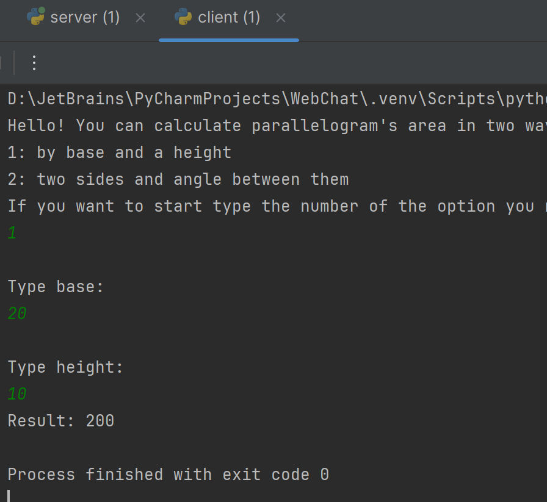

Задание 2:
Реализовать клиентскую и серверную часть приложения. Клиент запрашивает выполнение математической операции, параметры которой вводятся с клавиатуры. Сервер обрабатывает данные и возвращает результат клиенту.
Варианты операций:
- Теорема Пифагора.
- Решение квадратного уравнения.
- Поиск площади трапеции.
- Поиск площади параллелограмма.
- Порядок выбора варианта: Выбирается по порядковому номеру в журнале (пятый студент получает вариант 1 и т.д.).
Требования:
Обязательно использовать библиотеку socket. Реализовать с помощью протокола TCP.
Выполнение:
server.py
Мне по варианту попалась площадь параллелограмма. Так что сервер сначала будет принимать цифрой вариант подсчета: через основание и высоту или через две стороны и синус между ними.
import socket
import math
TCP_PORT = 9090
sock = socket.socket()
sock.bind(('localhost', TCP_PORT))
sock.listen(1)
Для подсчета синусов импортируем библиотеку Math, также создаем объект сокета, закрепляем его за нужным хостом и портом и ставим прослушивание в макс. одного клиента.
В отличие от UDP протокола, сначала принимаем подключение от клиента, получив его адрес и сокет, а далее поочередно получаем от него способ подсчета площади и размерности входных данных:
try:
while True:
conn, addr = sock.accept()
print(f'Connected: {addr}')
try:
conn.send(greeting_msg.encode('utf-8'))
data = conn.recv(1024)
if not data:
conn.close()
continue
option = data.decode('utf-8')
if option == '1':
conn.send('\nType base:'.encode('utf-8'))
# что-то происходит .....
except Exception as e:
print(f'Error: {e}')
finally:
conn.close()
except KeyboardInterrupt:
print('\nServer stopped')
finally:
sock.close()
client.py
На уровне клиента также создается сокет, подключается к адресу сервера и начинает обмениваться данными выбора подсчета площади и данными для вычислений:
import socket
TCP_IP = 'localhost'
TCP_PORT = 9090
sock = socket.socket()
sock.connect((TCP_IP, TCP_PORT))
data = sock.recv(1024)
print(data.decode('utf-8'))
option = input()
sock.send(option.encode('utf-8'))
if option == '1':
data = sock.recv(1024)
print(data.decode('utf-8'))
base = input()
sock.send(base.encode('utf-8'))
data = sock.recv(1024)
print(data.decode('utf-8'))
height = input()
sock.send(height.encode('utf-8'))
elif option == '2':
# что-то происходит .....
result = sock.recv(1024).decode('utf-8')
print(f'Result: {result}')
sock.close()
При запуске на клиенте можно выбрать подсчет площади через основание и высоту:

А также через две стороны и синус: